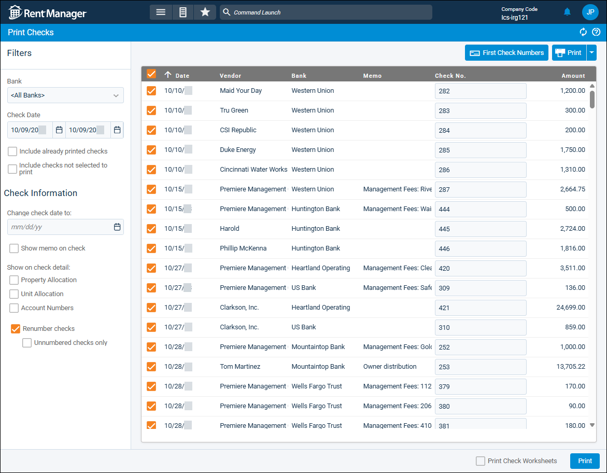
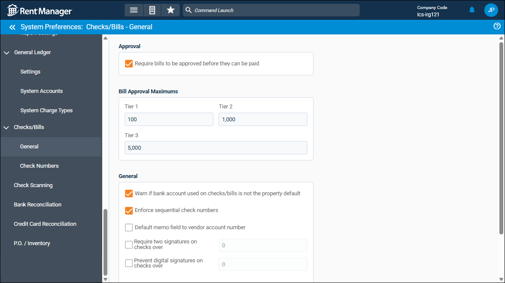

Source: https://rmxhelp.rentmanager.com/Topics/Express/KB/Checks-Prevent-Skipped-Check-Numbers.htm
Prevent Skipped Check Numbers
Rent Manager includes several settings that control how check numbers are assigned. In some cases, having both the system preference to Enforce Sequential Check Numbers and the Print Checks page's Renumber checks field enabled can cause numbers to be skipped. This happens when the system avoids creating duplicate check numbers. To keep your numbering consistent, review how your business processes checks and disable either Enforce Sequential Check Numbers or Renumber checks, depending on which option best fits your workflow.
Warning
It is recommended that you disable the Print Checks page option to Renumber checks in favor of the system preference option to Enforce Sequential Check Numbers. However, speak with your accountant to determine which option best suits your business needs. For more information, refer toChecks/Bills General (System Preferences) and Check Numbers (System Preferences).
Turn Off Renumber Checks
Related Privileges
| Group | Privilege | Column |
|---|---|---|
| Banks/Checks | Checks | View, Edit |
| Print checks | Enabled | |
| Override sequential check number enforcement | Enabled |
For more information, refer to Control User Access.
The Print Checks page option to Renumber checks allows you to edit the check numbers of the checks you are printing. This option is useful when you need to change check numbers for multiple bank accounts quickly. However, this option is ineffective if you also have Enforce Sequential Check Numbers enabled because check numbers might be skipped.
To turn off renumbered checks, do the following:
-
Go to
 arrow_forward Payables arrow_forward Checks arrow_forward Print Checks.
arrow_forward Payables arrow_forward Checks arrow_forward Print Checks.
The Print Checks page remembers the selected values from the last time checks were printed. For example, if Renumber checks was enabled the last time a check was printed, it is still enabled the next time the page is opened.
-
Uncheck Renumber checks.
Checks now follow in sequential order. -
Continue the necessary steps to print your checks. For more information, refer to Print Checks.
Turn On Enforce Sequential Check Numbers
Related Privileges
| Group | Privilege | Column |
|---|---|---|
| System | System Preferences | View, Edit |
Users with the following privilege can temporarily bypass the system preference for Enforce sequential check numbers, allowing them to write or print checks out of sequence when necessary:
| Group | Privilege | Column |
|---|---|---|
| Banks/Checks | Override sequential check number enforcement | Enabled |
For more information, refer to Control User Access.
The system preference option to Enforce sequential check numbers ensures that Rent Manager warns users when checks are being written out of sequence. This is the best practice when you wish to maintain sequential check numbering and prevent skipped or duplicate check numbers.
To turn on enforcing sequential check numbers, do the following:
-
Go to
arrow_forward  Administration arrow_forward Preferences arrow_forward System Preferences arrow_forward Checks/Bills arrow_forward General.
Administration arrow_forward Preferences arrow_forward System Preferences arrow_forward Checks/Bills arrow_forward General. -
Check Enforce sequential check numbers.
-
Click Save.
Users are now warned if checks are written out of sequence.
